|
|
HELP FIND THE FOLLOWING LOCATIONS
PAGE 24
DANGER MAN:
The Relaxed Informer (Anthony
Bushell: 1960)
Unknown
1 - John Drake drives away with Frederick's car.

 This
footage appears to be out takes from the film 'State Secret'.
Locations identified for this hilm include Trento and the
road around Lake Garda, Italy.
This
footage appears to be out takes from the film 'State Secret'.
Locations identified for this hilm include Trento and the
road around Lake Garda, Italy.
Unknown 2 - Frederick leaves the Bavarian market town with an unwanted passenger, John Drake.

Unknown 3 - Establishing shot of a Bavarian market town.

Unknown 4 - John Drake and Ruth Mitchell arrive at the island of the Paxites.

 Probably
from the Pembroke location shoot.
Probably
from the Pembroke location shoot.
Kyrenia Castle, Cyprus - John Drake and Ruth Mitchell arrive at the island of the Paxites.

Kolossi Castle, Cyprus - A tourist attraction on the island of the Paxites.

Unknown 5 - Peasants work the fields on the island of the Paxites.

 Probably
Crete from the same stock footage reel as the castles.
Probably
Crete from the same stock footage reel as the castles.

DANGER MAN:
The Black Book (Michael
Truman: 1965)
Unknown
1 - Sir Noel
Blanchard drops of
blackmail payment from a train.
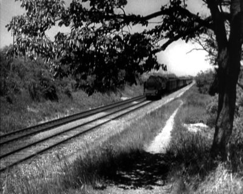
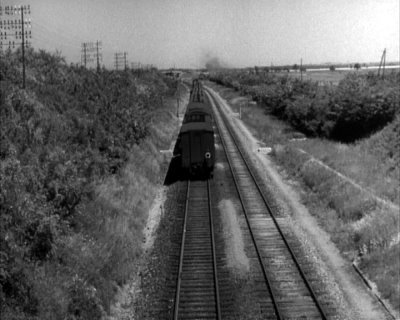
Unknown 2 - Drake's Mini arrives at the home of General Carteret and approaches along the drive.
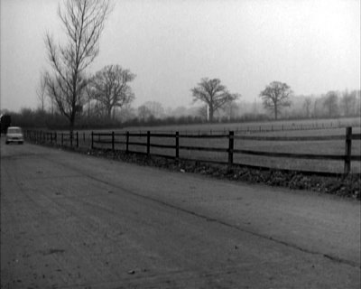
 Old MGM
footage?
Old MGM
footage?
Unknown 3 - Sir Noel Blanchard sets off out of Paris with his blackmail payment and talks to Drake by radio as he leaves town.
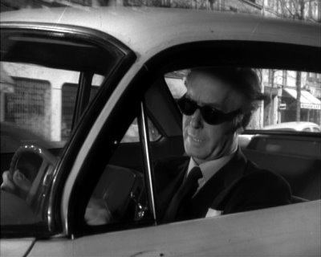
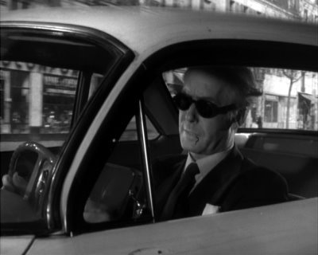
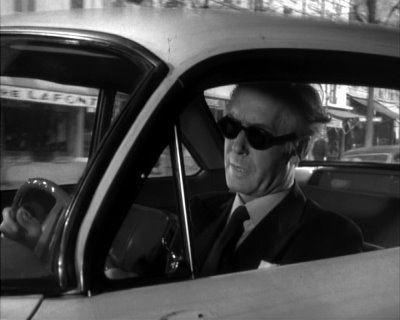
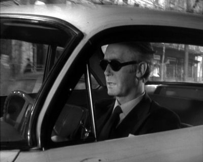
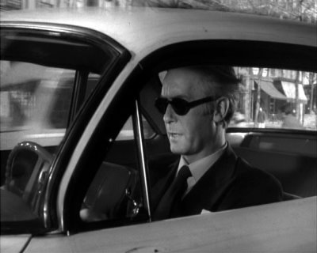
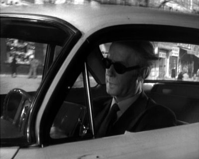
Unknown 4 – Drake finds a suitable spot to continue his electronic surveillance.
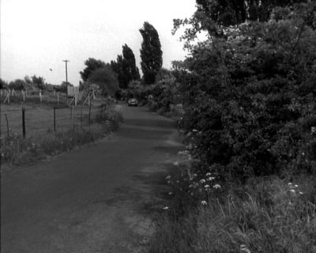
 More
Desborough footage.
More
Desborough footage.
Unknown 5 – Drake finds a suitable spot to continue his electronic surveillance.
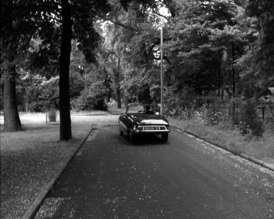
Unknown 6 – John Drake (Patrick McGoohan) uses his tracking device to find the car containing the blackmail money and gives chase.
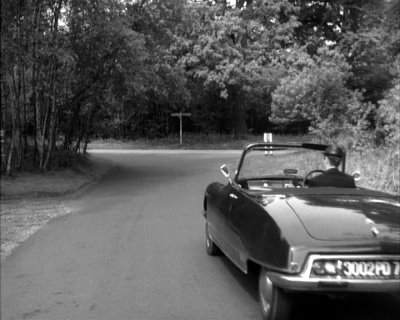
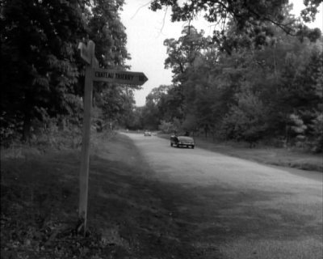
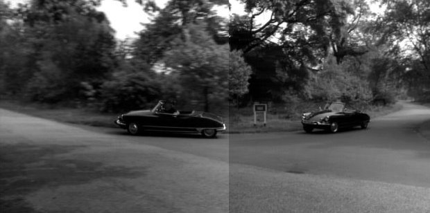
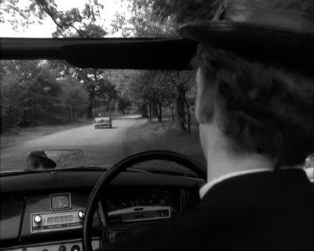
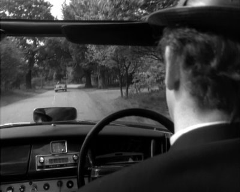
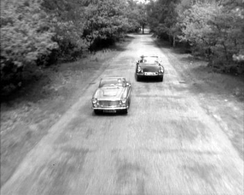
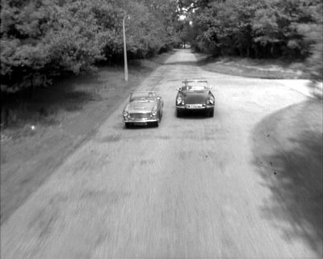
DANGER
MAN: English
Lady Takes Lodgers
(Michael Truman 1965)
La Musclera, Palafrugell, Girona,
Catalonia, Spain - The Portuguese
home of George and Emma Stanway (La Musclera).
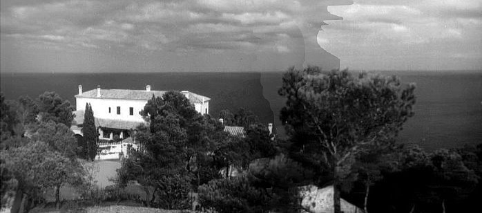
Footage from CHASE A CROOKED SHADOW (1958)
Unknown 1and 2 - Establishing an stock shots of Portugal.
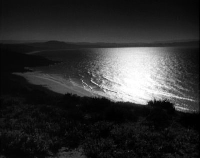
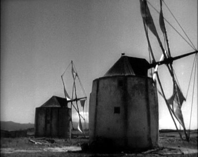
Rua da Adiça, Alfama, Lisbon, Portugal -
Identified by Sietse Postma, July 2023

Alfama,
Lisboa, Portugal - View from the roof of Igreja de Santo
Estêvão.
Identified by Sietse Postma, July 2023

Think you know a spot? Need a bigger image? Email me.
< Previous | Index | Avengerland | Next >
Copyright © 2003 Anthony R. McKay
<